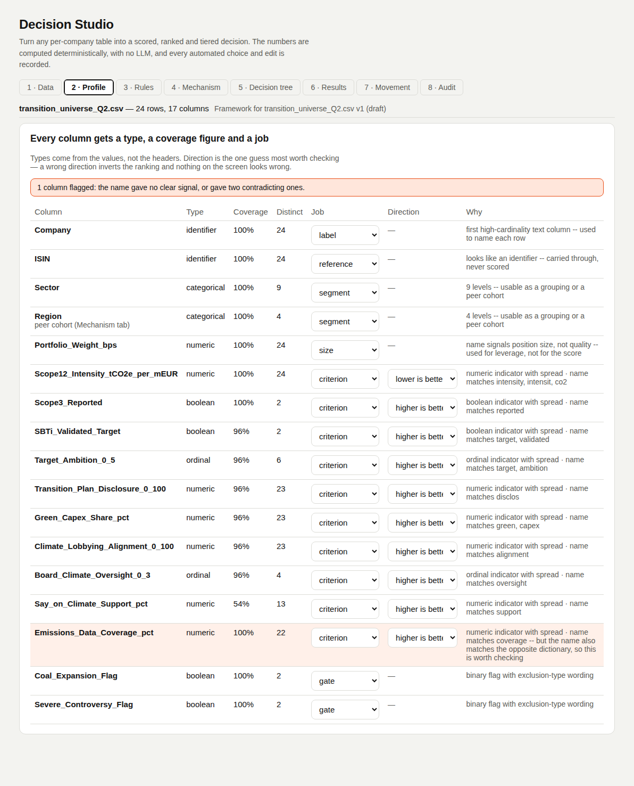

Profile
You decideTells you what each column is and proposes a job and a direction for it. This is where you catch a guess before it inverts a ranking.
Column type, from the values
The header is not trusted: it can lie or be in another language.
| Type | Recognised when |
|---|---|
| numeric | Values parse as numbers (and are not ordinal). |
| ordinal | Whole numbers with 7 or fewer distinct values (e.g. 0–3, 0–5). |
| boolean | 95%+ of values are Yes/No vocabulary, at most 3 distinct. |
| categorical | Text with few distinct values: sector, region. |
| identifier | Looks like a code: ISIN, LEI, ids. |
| text | Free text with many distinct values. |
What the profile table shows
Columns: Column, Type, Coverage, Distinct, Job, Direction, Why.
| Figure | Meaning |
|---|---|
| Coverage | Share of rows with a value. |
| Distinct | Number of different values. |
| Quantiles | min, p5, Q1, median, Q3, p95, max, mean, sd; for Yes/No, the share of Yes. |
| Spread flag | Set when every present value is the same. Such a column cannot tell entities apart. |
The seven jobs
Proposed for every column. Change any of them.
| Job | What the engine does with it |
|---|---|
| label | Names each row. The first high-cardinality text column. |
| reference | Carried through, never scored (ISIN, ids). |
| size | Position size (weight, bps, aum). Used for leverage only, never as a criterion. |
| gate | A Yes/No flag with exclusion wording. Becomes a gate on the Decision tree tab. |
| criterion | Scored. Numeric, ordinal or Yes/No with spread. |
| segment | A grouping. Can become the peer cohort. |
| excluded | Ignored: no spread, free text, or you turned it off. |
Direction
Higher-is-better or lower-is-better, inferred from the column name against keyword dictionaries.
| Case | Result |
|---|---|
| Name matches one dictionary | Direction set, reason shown: name matches intensity, co2. |
| Name matches both | Heavier keyword wins, and the proposal is marked needs check. |
| Name matches neither | Defaults to higher, marked needs check. |
The dictionaries live in arp/decision/data/role_keywords.json as data, so a house that reports in a third language extends them with an edit, not a code change.
Deriving the framework
Jobs and directions become editable once a framework exists.
| When | What happens |
|---|---|
| Before deriving | The profile is read-only. The Profile and Rules tabs offer Derive a framework and Apply a saved one. |
| After deriving | The studio lands here when any direction is marked needs check, otherwise on Mechanism. |
| Deriving again | On the same table, the result is saved as the next version of that table's framework, not as a new one. |
In the tool
Screenshots of Decision Studio running on the sample table, taken with the app as it is on main.


Emissions_Data_Coverage_pct highlighted. ISIN shows as reference, Region as segment marked as the peer cohort.Functions applied
What runs at this step, in order, with an example. Blue rows run on GoRules ZEN; the rest is Python in backend/arp/decision/.
| Function | Engine | Example |
|---|---|---|
profile_dataset | Python | Scope3_Reported → boolean, coverage 1.0, 2 distinct. Target_Ambition_0_5 → ordinal, coverage 0.96. ISIN → identifier. |
propose_roles | Python | Emissions_Data_Coverage_pct → criterion, higher, needs_check (matches both dictionaries). Portfolio_Weight_bps → size. |
propose_cohort_column | Python | → ('Region', '4 cohorts over 24 rows') |
Code and formulas
The formula each function applies, and its source as it is in the repository.
propose_directionbackend/arp/decision/roles.py:60–80lower if Σ weight(lower-keyword hits) > Σ weight(higher-keyword hits), else higher. needs_check when both dictionaries hit, or neither does.
Python source (21 lines)
def propose_direction(column: str) -> tuple[Direction, str, bool]:
"""Returns (direction, reason, needs_check).
Direction is the single most valuable guess this layer makes and the
most dangerous one to get wrong -- it silently inverts a ranking and
the result looks entirely normal. So an ambiguous match (the name hits
both dictionaries) or no match at all is flagged for a human rather
than applied quietly.
"""
kw = load_keywords()
high, high_hits = _keyword_score(column, kw["higher"])
low, low_hits = _keyword_score(column, kw["lower"])
direction: Direction = "lower" if low > high else "higher"
if not high and not low:
return direction, "no directional keyword matched -- defaulted to higher is better, please confirm", True
mixed = high > 0 and low > 0
hits = ", ".join(low_hits if direction == "lower" else high_hits)
reason = f"name matches {hits}"
if mixed:
reason += " -- but the name also matches the opposite dictionary, so this is worth checking"
return direction, reason, mixedpropose_cohort_columnbackend/arp/decision/roles.py:128–153A categorical column with levels ≥ 2 and rows ÷ levels ≥ min_cohort (5); a name that signals a peer grouping is preferred.
Python source (26 lines)
def propose_cohort_column(profiles: dict[str, ColumnProfile], proposals: list[RoleProposal], row_count: int, min_cohort: int) -> tuple[str | None, str]:
"""Picks the column whose levels make the most plausible peer cohorts.
Scoring an emissions intensity across utilities and software companies
in one percentile ranking is close to meaningless, so a sector-like
column is preferred over any other categorical -- but only when its
levels are big enough for a within-cohort rank to mean something.
"""
kw = load_keywords()
segments = [p.column for p in proposals if p.role == "segment"]
if not segments:
return None, "no categorical column with usable levels -- normalising across the whole table"
def viable(column: str) -> bool:
p = profiles[column]
return p.unique >= 2 and (row_count / max(1, p.unique)) >= min_cohort
named = [c for c in segments if has_keyword(c, kw["cohort"])]
for candidate in named + segments:
if viable(candidate):
why = "name signals a peer grouping" if candidate in named else "the only categorical with large enough levels"
return candidate, f"{why}; {profiles[candidate].unique} cohorts over {row_count} rows"
return None, (
f"every categorical column splits {row_count} rows into cohorts below the {min_cohort}-row floor -- "
"a percentile rank over three peers is noise dressed as a score, so normalisation stays whole-table"
)